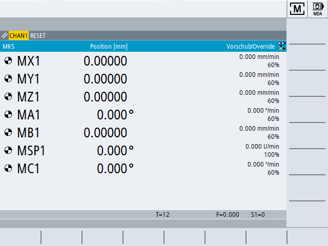

Hochlauf
Nach dem Hochlauf der Steuerung öffnet sich das Grundbild in Abhängigkeit von der vom Maschinenhersteller vorgegebenen Betriebsart, im Regelfall ist dies das Grundbild der Funktion "REF POINT".
| | Maschinenhersteller Beachten Sie hierzu bitte die Angaben des Maschinenherstellers. |